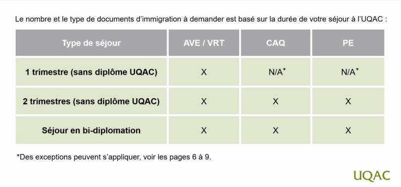

Il est conseillé de faire cette partie même si vous avez pas reçu les résultats de votre candidature. En effet, les procédures sont longues et il est préférable de les commencer le plus tôt possible. Bien que certaines procédures ne peuvent être faites qu'après avoir reçu les résultats de votre candidature. je vais faire en sorte de vous donnez les informations utiles si besoin.
Bon alors tout d'abord voici les documents que vous aurez besoin pour partir en mobilité :

Note : AVE / VRT et fournit AVEC le permis d'étude (PE)
Voila comment vous devez procédés :
info : vous aurez besoin du CAQ pour le permis d'études, vous pouvez pas faire les deux en même temps.
- Le CAQ (Certificat d'acceptation du Québec) est un document qui vous permet de déposer une demande de permis d'étude.
- Pour la demande de logement il est préférable de demander le plus tot possible car il y a une file d'attente et les demandes sont traitées dans l'ordre d'arrivée.
(il y a beaucoup de demande pour les logements étudiants, il est préférable de s'y prendre le plus tôt possible)
- Pour l'assurance, il y a un protocole d'entente entre les deux pays, vous n'avez pas besoin de souscrire à une assurance privée bien que ça reste conseillé si vous avez de grave problème de santé, cela permettrait de vous rapatrier en France en cas de grave problème.
Vous recevrer un mail des relations internationales pour vous demandez de complété une fiche d'assurance mais si vous avez pas envie de patienté, je vous le donne sur la page d'assurance.
les étapes vous sont donné.
Si vous avez reçu votre réponse, vous pouvez directement passer à la demande du permis d'étude, Vous n'avez pas besoin de faire l'assurance pour le PE.